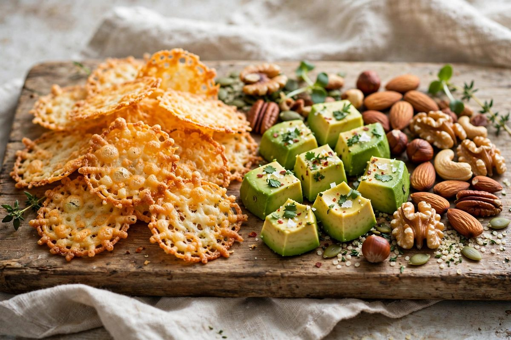

Home » Guides
Keto Snacks

Snacking on keto is different from snacking on a high-carb diet. Because keto meals are filling, you may find you need fewer snacks, but when hunger strikes between meals, it helps to have good options ready. This guide lists the best keto snacks, the ones to avoid, and how to snack without stalling your progress.
Savoury keto snacks
The simplest savoury snacks need no cooking at all. A handful of nuts — macadamias, pecans, almonds, or walnuts — is satisfying and portable, though portions matter because nuts are calorie-dense. Cheese is another easy snack, whether a slice of cheddar, a Babybel, or a chunk of feta with olives. Pork scratchings and beef jerky are crunchy, low-carb options, but check the label for added sugar. Celery sticks with cream cheese, cucumber slices with guacamole, and a boiled egg with salt are all quick, fresh, and filling.
Sweet keto snacks
For a sweet snack, a small handful of berries with double cream is hard to beat. Dark chocolate with 85 percent cocoa or more has only a few grams of net carbs per square. Keto fat bombs, made from coconut oil, nut butter, and cocoa, are popular for a quick energy boost. Greek yoghurt with a few raspberries and chopped nuts feels like a dessert. Sugar-free jelly with cream is a light option. Keep sweet snacks small and occasional, since it is easy to eat several servings of something that tastes good.
Crunchy snacks and dips
If you miss crisps, there are keto-friendly alternatives. Kale crisps, made by baking kale leaves with olive oil and salt, are surprisingly good. Cheese crisps, made by baking small piles of grated parmesan until golden, are crunchy and salty. Pork scratchings are the closest thing to a crisp on keto. Serve any of these with dips: guacamole, sour cream and chive dip, or a simple cheese dip. These snacks are great for evenings in front of the television, when the habit of snacking is strongest.
When and how to snack
On keto, snacking should be a response to genuine hunger, not boredom or habit. Because fat and protein are filling, many people find they naturally snack less. If you are hungry between meals, first check whether you drank enough water or ate enough fat at your last meal. When you do snack, choose a real food rather than a processed keto bar, which often contains sweeteners that can stall progress or upset digestion. Keep snacks pre-portioned in small bags so you do not eat a whole packet without noticing.
Snacks to keep at home and at work
Keeping the right snacks in the right places makes keto much easier. At home, keep boiled eggs in the fridge, cheese and nuts in the cupboard, and olives in a jar. At work, keep a drawer with nuts, beef jerky, and a few keto bars for emergencies. In the car, keep a small bag of nuts for long journeys. The point is to make the good choice the easy choice: when hunger strikes, a keto snack should be closer than a vending machine. Check the labels on packaged snacks once, when you buy them, and then trust your favourites. Replace snacks as you use them, so you are never caught with an empty cupboard and a strong craving.
Frequently Asked Questions
Are keto snack bars a good choice?
They are convenient but often expensive and full of sweeteners. Whole foods like nuts, cheese, and eggs are usually a better snack.
Can I eat popcorn on keto?
Popcorn is too high in carbs for most keto plans — a small bowl can contain 10 grams or more of net carbs. Pork scratchings or cheese crisps are better crunchy alternatives.
How many snacks a day is okay on keto?
There is no fixed number. Snack when you are genuinely hungry, keep portions small, and make sure snacks do not push you over your daily carb limit.